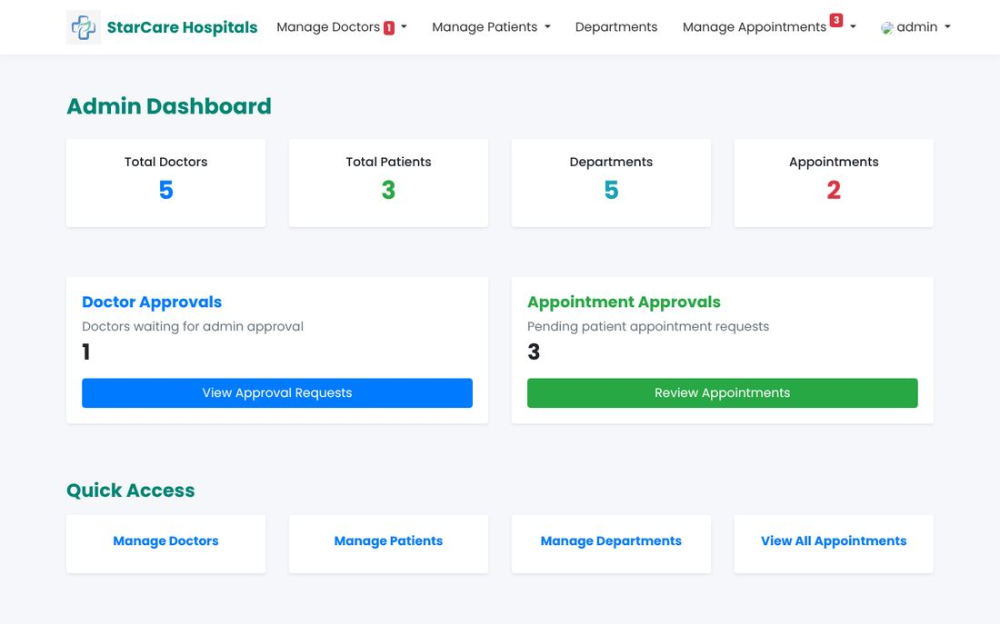
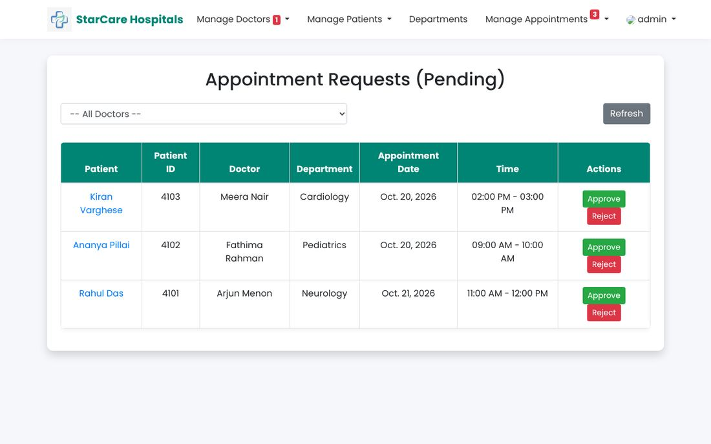
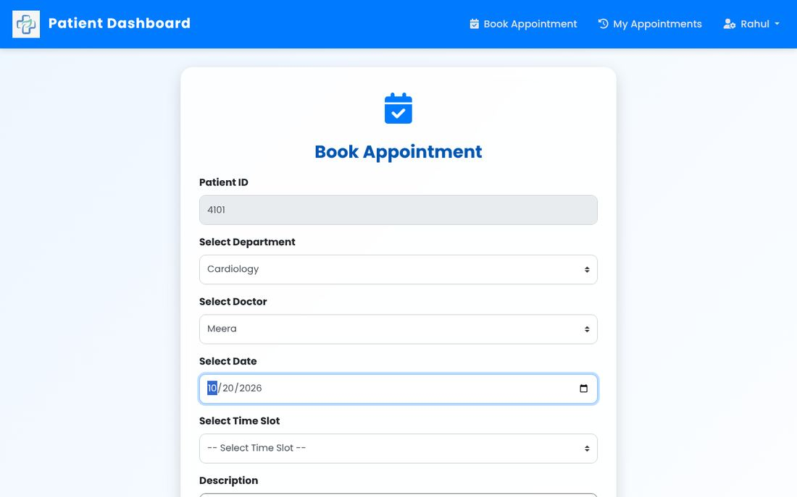
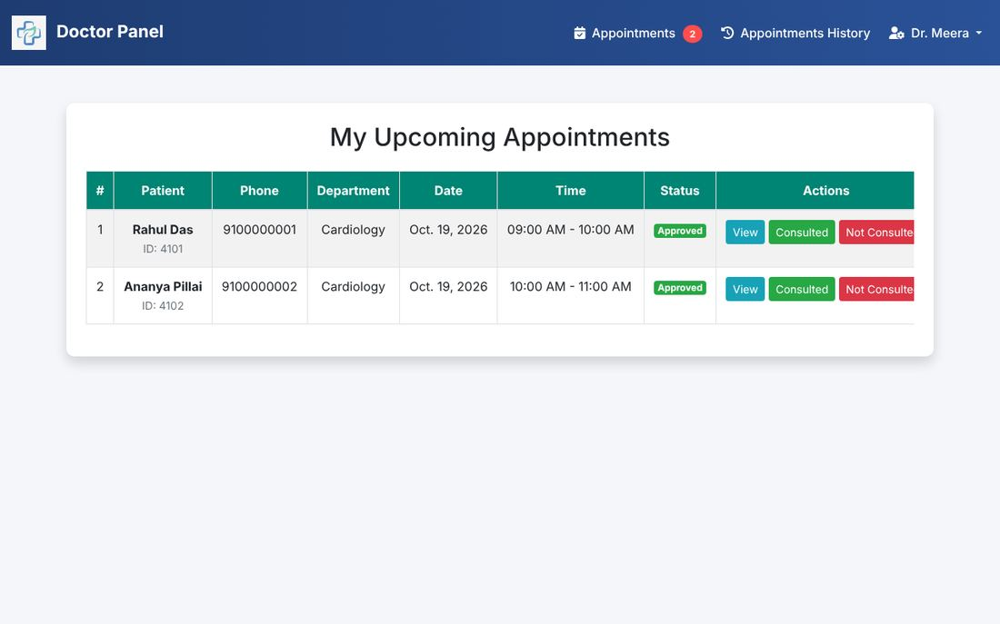

StarCare: Hospital Management System
A role-based Django web app for running a hospital's appointments. I designed, built, tested and deployed it myself, and it's live, so you can try every role.
Demo logins: admin / Admin@123 · dr.meera / Doctor@123 · rahul / Patient@123 (one click on the login page). The first load after it's been idle can take up to a minute.
01The problem
A hospital's appointment process has three groups of people who need different things. Patients want to book a slot without phoning anyone. Doctors need to see today's schedule and record what happened. Admins need to approve doctors, manage departments and keep appointments moving.
The hard part isn't the pages. It's the rules: no double-booked slots, a daily limit per doctor, one visit per patient per doctor per day, and making sure each person can only see and do what their role allows.
02What I built
Patient
- Self-signup; login details are emailed (or shown on screen in demo mode)
- Book by department → doctor → date → time slot; booked slots are disabled live
- Appointment history with status badges
Doctor
- Dashboard: next appointment, today's load, monthly totals
- Upcoming appointments; mark consulted or not consulted (AJAX, no reload)
- Doctor signups wait for admin approval before the doctor can log in
Admin
- Approve or reject doctors and appointment requests
- Add, edit and delete departments inline (AJAX)
- Manage doctors and patients; filter and search appointment history
Everyone
- Role-based access control on every page and API
- Email notifications for registration and approvals
- Responsive Bootstrap UI with live counters




03How it works
Data model
A custom user model carries a user_type (admin, doctor or patient). Doctor and Patient profiles link to it, doctors belong to a Department, and an Appointment ties a patient, doctor, department, date and time slot together with a status:
Booking rules, enforced on the server
- A slot can only be booked once per doctor per day
- Each doctor takes at most 5 appointments a day; if a day is full, the page suggests the next free date
- A patient can see the same doctor only once a day
- No past dates, no made-up time slots, and only approved doctors can be booked
# hospital_app/access.py: one decorator guards every view def role_required(role, api=False): def decorator(view): @wraps(view) def wrapper(request, *args, **kwargs): user = request.user if not user.is_authenticated: if api: return JsonResponse({'error': 'Login required'}, status=401) return redirect('login_page') if user.user_type != role: if api: return JsonResponse({'error': 'Forbidden'}, status=403) return redirect(HOME_FOR[user.user_type]) return view(request, *args, **kwargs) return wrapper return decorator # usage @role_required(ADMIN) def delete_patient(request, id): ...
04Testing
I test software for a living, so this project has the safety net I'd expect from a team codebase. Both suites run on GitHub Actions for every push, and the browser test report is published automatically.
Django TestCase
- Login redirects for each role
- Access control: wrong role, logged out, JSON 401/403
- Every booking rule, plus the availability APIs
- Approve → consult workflow and ownership checks
- Signup and approval emails (Django's test mail outbox)
Playwright + TypeScript
- Page Object Model:
LoginPage,BookingPage - The full journey across three roles in one serial suite
- Runs the Django server on a fresh, seeded database itself
- Desktop Chrome plus a Pixel 7 mobile profile
- HTML report, traces on retry, screenshots on failure
// e2e/tests/appointment-flow.spec.ts (excerpt) test('admin approves the pending appointment', async ({ page }) => { await new LoginPage(page).loginAsDemo('Admin'); await page.goto('/admin_view_appointments/'); const row = page.locator('tr', { hasText: 'Ananya' }).filter({ hasText: slot }); page.once('dialog', d => d.accept()); await row.locator('.approve-btn').click(); await expect(row).toHaveCount(0); // leaves the pending list });

What the tests caught
Writing tests against the rules, not just the happy path, turned up real defects. I fixed each one and kept the test as a regression guard.
Any logged-in user, and for some URLs anyone at all, could open admin pages, approve appointments or delete patients and doctors just by visiting a URL. Fixed with the role_required decorator on all 46 protected views.
The server accepted past dates, made-up time slots, unapproved doctors and repeat bookings, because the checks lived only in JavaScript. All of them are now validated in the view.
Booking a fully booked day just reloaded the form with no explanation. It now tells the patient why.
Two independent if/else blocks meant the second one always hid the first one's message. Changed to a single else if chain.
The earliest selectable date was computed in UTC, so before 5:30 AM in India the picker allowed yesterday. It now uses local time.
An invalid date in the availability API crashed the view. It now returns a clean 400.
05Deployment
- Render runs the app with Gunicorn;
render.yamldefines the service as code, and every push tomasterredeploys it - Settings come from the environment: secret key, debug flag and allowed hosts. Secure cookies and HTTPS headers are on in production.
- WhiteNoise serves compressed static files without a separate server
- Demo mode seeds realistic data on each start, shows generated passwords on screen instead of emailing them, and protects the shared demo accounts so one visitor can't lock out the next
06What I'd do next
- Make destructive actions (delete, approve) POST-only, with CSRF protection, instead of links
- Move to PostgreSQL with persistent storage, and add an audit log of status changes
- Expose a small REST API (Django REST Framework) for a future mobile client
- Refactor the large
views.pyinto per-role modules with class-based views - Send emails in the background with a task queue so requests never wait on SMTP